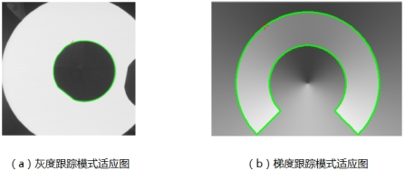

轮廓跟踪工具的主要任务是从图像中的一个初始轮廓点出发，按照一定的规则，依次逐个跟踪轮廓点，最终得到完整的亚像素目标轮廓。
| 分类 | 参数名称 | 参数描述 |
|---|---|---|
| 属性窗口 | 跟踪模式 | 主要有两种模式：灰度模式和梯度模式。 |
| 背景颜色 | 黑色背景和白色背景。 | |
| 初始轮廓点输入模式 | 主要有单点输入和向量输入。单点输入是输入一个点，向量输入是输入二个点。 | |
| 角度搜索方式 | 主要加角度和减角度两种搜索方式。 | |
| 单点输入 | 就是输入一个点。 | |
| 向量输入 | 输入两个点。 | |
| 最大轮廓点数 | 见注意说明。 |
|
| 阈值 | 见注意说明。 |
|
| 图像窗口 | 输入图像 | 需要进行轮廓跟踪的图像。 |
| 点或者直线 | 单点输入就是一个十字GUI；如果是向量的话是一个直线GUI。 | |
| 数据链 | 输入图像 | 需要进行轮廓跟踪的图像。 |
| 二维线性变换 | 用于输出或者输入图像的初始图像变换。 | |
| 高级界面 | 无 | 无 |
| 分类 | 参数名称 | 参数描述 |
|---|---|---|
| 监视窗口 | 输入图像 | 需要进行轮廓跟踪的图像。 |
| 输出图像 | 轮廓跟踪的结果图像，如果成功会显示轮廓，用红色的线标识。 | |
| 轮廓点位置 | 轮廓的位置点集合。 | |
| 轮廓点数量 | 如果轮廓跟踪成功，会显示轮廓的数量。 | |
| 跟踪状态结果 | 轮廓跟踪的结果，成功还是失败等，会有错误提示。 | |
| 执行结果 | 工具执行结果。 | |
| 执行时间 | 工具执行时间。 | |
| 图像窗口 | 输出图像 | 轮廓跟踪的结果图像，如果成功会显示轮廓，用红色的线标识。 |
| 向量输入 | 属性栏参数“向量输入”的两个点。 | |
| 轮廓链 | 如果成功会显示，用红色的线标识轮廓。 | |
| 执行结果 | 显示工具执行结果，执行成功显示“OK”，执行失败显示“NG”，同监视窗口的执行结果参数。 | |
| 数据链 | 输出图像 | 轮廓跟踪的结果图像，如果成功会显示轮廓，用红色的线标识。 |
| 轮廓链 | 如果成功会显示，用红色的线标识轮廓。 | |
| 轮廓点位置 | 轮廓的位置点集合。 | |
| 轮廓点数量 | 如果轮廓跟踪成功，会显示轮廓的数量。 |
开放轮廓：目标轮廓一直延伸到图像边界。
外轮廓：轮廓包围的区域是目标。
内轮廓：轮廓包围的区域是背景。
轮廓跟踪工具从一个固定的初始轮廓点出发，根据跟踪规则，由当前轮廓点确定下一个轮廓点，依次跟踪，从而进行完整轮廓的提取。基本原理如图7所示。
根据跟踪规则的不同分为灰度跟踪模式和梯度跟踪模式：
灰度跟踪模式是根据轮廓点的邻域灰度信息来确定下一个轮廓点。
该模式通过寻找轮廓点邻域上符合灰度要求的像素值，从初始轮廓点依次跟踪，再通过亚像素插值算法，实现轮廓跟踪。其原理如下图所示：
梯度跟踪模式是根据轮廓点的邻域梯度信息来确定下一个轮廓点。
该模式通过使用像素阵列的方法，找到阵列上梯度最大像素点，依次跟踪，得到完整轮廓，再通过抛物线插值算法，得到亚像素轮廓。其原理如图9所示。
用户可以根据需求来设置灰度模式或者梯度模式。两种跟踪模式的应用场合有所差别，具体来说，灰度跟踪模式主要适用于目标和背景灰度差异明显的图像，如图10(a)所示；梯度跟踪模式对因光照不均而造成的目标和背景不好分割的图像适应较好，如图10(b)所示。

阈值的选择：阈值分为灰度阈值和梯度阈值，当前使用的跟踪模式对应其相关的阈值。
灰度阈值：像素值大于该阈值，可以认为该像素值为白色，反之为黑色。
梯度阈值：轮廓点邻域的像素差大于梯度阈值，才能跟踪到下一个轮廓点。
背景颜色：有白色和黑色两种选择，并且只有在灰度模式才需要设置背景颜色。
设置跟踪方向：跟踪方向分为加角度和减角度两种，主要用于确定初始轮廓点的跟踪方向。加角度就是将当前的梯度角度加上90度（顺时针转90度）作为轮廓跟踪方向，减角度就是将当前的梯度角度减去90度（逆时针转90度）作为轮廓的跟踪方向。可以通过设置加减角度搜索方式来设置跟踪方向。
初始轮廓点获取：初始轮廓点获取获取分为单点输入和向量输入。
单点输入：单点模式由用户直接输入一个固定的初始轮廓点位置。在灰度模式下，输入的初始轮廓点必须在背景上，并且初始轮廓点的8邻域内至少有一个背景点和目标点。
向量输入： 向量模式是通过向量与轮廓边缘的交点来确定初始轮廓点。
最大轮廓点数：执行一次轮廓跟踪后，所能找到的最大轮廓点数。若当前已经跟踪到的轮廓点总数大于该阈值时，则跟踪停止，即使目标实际的轮廓点数大于该值。
参见“\Samples\轮廓跟踪工具.gvp”。